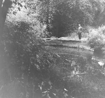
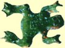

|
Local Interest
Neighborhood History...
Licton Springs Park History...
Wetland Information
Water Quality
Neighborhood Map
Links

|
|
Licton Springs is a Wetland
Why Should We Value Wetlands?

photos:
Seattle Municipal Archives
|
Values
are obviously very personal things and differ from one individual
to another. There are some that think it is important to provide housing
for a growing population and, thus, see nothing wrong in draining
and building on wetlands. Then there are others who find more value
in just having the wetlands remain in their natural state. |
Whatever your personal feelings are on this subject, it helps to understand
the unique role wetlands play in our everyday lives in order to make informed
decisions and establish values concerning wetlands.
Wildlife Habitat
| Wetlands
serve as sources of food and shelter for many different types of animals.
They are especially important for birds as stopovers on their migratory
routes. Fish, shellfish, and mammals, small and large, utilize wetlands
for food, shelter, and nesting activities. |
|
What
Is A Wetland?
|

|
The
three most commonly used features to identify a wetland are
1.The presence of water: either standing water or sub surface water
saturating the soil. In many wetlands, the standing water occurs
on a seasonal basis.
|
2.Unique
Soils that differ from the adjacent upland soils.
3.The presence of vegetation which is uniquely adapted to wet conditions,
periodic flooding and inundation.
Welcome
| Local Interest |
Neighborhood in Action
Community Council |
Currents Newsletter
|